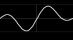
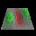

Paul Falstad's Home Page!




My Stuff
Interesting Links
Markets
Interesting/educational
See, the net isn't just for dirty pictures.
Music
Movies
-
NetFlix
Great way to rent DVD's! They have everything, and
you never have to worry about late fees or
driving back to the video store...
-
Screen It!
Great movie reviews! It also details exactly what is objectionable
about each movie. I generally don't find anything objectionable about
most movies. However I still like this site because I almost always agree
with their ratings. Also, my wife doesn't like violent movies
so we check here to avoid those.
-
Rotten Tomatoes
Collects reviews from all different sources and uses them to come
up with an overall score.
Funny
-
The Onion
-
Cartoon Bank
Distracted,
Error,
Santa,
Whistle,
Change of venue,
Memo,
Rhythm,
Sick,
Radical,
Check,
Feelings,
Chick,
Welcome,
Medium,
Hold,
Projects,
Billion,
Grace,
Art,
Lawyer,
Valentine,
Blame,
Bank,
Weird,
Fed,
Latin,
Nobel,
Kinks,
Toast,
Room,
View,
Vote,
Homework,
Relative,
Sick,
Enough,
Interview,
Shoot,
Antidepressants,
Thoughts,
Hell,
Weak,
Look,
Thank You,
Problems,
Good Question,
Business,
Wishes
-
Conan O'Brien's speech to the Harvard Class of 2000
-
O'Brien Flops!
-
The One True Editor
"If you use ED you are on THE PATH TO REDEMPTION.
THE MIGHTY ED HAS SPOKEN!!!"
Good time wasters
People I know
Send me mail at: www@falstad.com